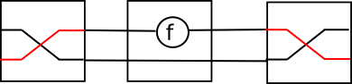

Sygnały i programowanie reaktywne
Systemy hybrydowe: elementy analogowe (ciągłe) i cyfrowe (dyskretne)
Sygnały: wartości zmienne w czasie
Przetworniki sygnałów (SF)
Signal a ~ Time -> a
SF a b ~ Signal a -> Signal b
(historycznie: Hallgren, Carlsson 1995: użycie procesorów strumieni do programowania GUI w Haskellu)
data SP a b = Put b (SP a b) | Get (a -> SP a b)
Strzałki
Pierwsze przybliżenie (Hughes 2000 ``Generalising monads to arrows'')
class Arrow a where
arr :: (b->c) -> a b c
(>>>) :: a b c -> a c d -> a b d
Dla dowolnej monady m, funkcje a -> m b są dobrymi kandydatami:
newtype Kleisli m a b = K(a -> m b)
instance Monad m => Arrow (Kleisli m) where
arr f = K $ return . f
K f >>> K g = K $ f >=> g
(>=>) :: Monad m => (a -> m b) -> (b -> m c) -> (a -> m c)
f >=> g = \x -> (f x >>= g)
Problem
Obliczenie sumujące wyniki dwóch obliczeń
add1 :: Monad m => m Int -> m Int -> m Int
add1 mx my = mx >>= \x-> my >>= \y -> return $ x+y
-- liftM2 (+)
Jak to wyrazić przy pomocy strzałek?
add2 :: Arrow a => a b Int -> a b Int -> a b Int
arr (+) ?
addInt :: Int -> Int -> Int
addInt = (+)
> :t arr addInt
arr addInt :: Arrow a => a Int (Int -> Int)
Bramki z jednym wejściem są za słabe...
Pomysł
add2 :: Arrow a => a b Int -> a b Int -> a b Int
add2 f g = (?)
Tak f jak i g potrzebują wejścia typu b.
Rozdzielmy wejście na dwie kopie
jedną podajmy do f, drugą zachowajmy
zachowajmy wynik f, podając drugą kopię do g
zsumujmy wyniki
Demultiplekser
Zamiast dwóch wejść, możemy uzyc jednego, które jest parą...
...pod warunkiem, że potrafimy operować na składnikach niezależnie
class Arrow a where {- ... -}
first :: a b c -> a (b,d) (c,d)
arr :: (b -> c) -> a b c
(>>>) :: a b c -> a c d -> a b d
second?
Mamy first a gdzie jest second?
second :: a b c -> a (d, b) (d, c)
second f = arr swap >>> first f >>> arr swap
where swap (x,y) = (y,x)

first f >>> second g
Teraz możemy przetwarzać obie składowe:
(***) :: a b c -> a b' c' -> a (b, b') (c, c')
f *** g = first f >>> second g
(&&&) :: Arrow a => a b c -> a b c' -> a b (c, c')
f &&& g = arr dup >>> (f *** g)
where dup x = (x,x)
add2 :: Arrow a => a b Int -> a b Int -> a b Int
add2 f g = (f &&& g) >>> arr (\(u,v) -> u + v)
-- uncurry (+)
Kombinatory parsujące
-- Swierstra & Duponcheel LL(1) parsers
-- static info: nullable, First
data StaticParser s = SP { spNullable :: Bool, spFirst :: [s] }
newtype DynamicParser s a = DP([s] -> (a,[s]))
data Parser s a = P (StaticParser s)(DynamicParser s a)
symbol :: s -> Parser s s
symbol s = P (SP False [s]) (DP (\(x:xs) -> (s,xs)))
-- Wywołane tylko gdy pierwszym symbolem jest s
(<|>) :: Eq s => Parser s a -> Parser s a -> Parser s a
(P (SP nul1 first1) (DP p1)) <|> (P (SP nul2 first2) (DP p2)) =
P (SP (nul1 || nul2) (first1++first2)) (DP p) where
p xs = case xs of
[] -> if nul1 then p1 [] else p2 []
(y:ys) -> if y `elem` first1 then p1 xs else
if y `elem` first2 then p2 xs else
if nul1 then p1 xs else p2 xs
Problem: >>= ?
Jak zdefiniować
(>>=) :: Parser s a -> (a -> Parser s b) -> Parser s b
Problem: ''statyczna'' informacja o parserze wynikowym nie jest statyczna, gdyż zalezy od pierwszego parsera.
Przypomnijmy, podobny problem był z
newtype Accy o a = Acc{acc::o}
(>>=) :: Accy o a -> (a->Accy o b) -> Accy o b
Rozwiązanie 1: Applicative
Zamiast Monad można uzyć Applicative:
<*> :: (Parser s (a->b)) -> Parser s a -> Parser s b
(P (SP nul1 first1) (DP pf)) <|> (P (SP nul2 first2) (DP pa)) =
P (SP (nul1&&nul2) first) (DP p) where
first = if nul1 then first1 ++ first2 else first1
p = ...
pure :: a -> Parser s a
pure = ...
Ćwiczenie: uzupełnij powyższą definicję
Bonus: wykorzystaj first oraz (&&&)
Rozwiązanie 2: Arrow
class Arrow a where
arr :: (b->c) -> a b c
(>>>) :: a b c -> a c d -> a b d
first :: a b c -> a (b,d) (c,d)
instance Eq s => Arrow (Parser s) where
arr f = P (SP True []) (arr f)
(P (SP nul1 first1) dp1) >>> (P (SP nul2 first2) dp2) =
P (SP (nul1 && nul2) (union first1 first2)) (dp1 >>> dp2)
first (P sp dp) = P sp (first dp)
instance Arrow (DynamicParser s) where ...
Ćwiczenie: uzupełnij instancję dla DynamicParser
ArrowZero, ArrowPlus
class Arrow a => ArrowZero a where
zeroArrow :: a b c
instance Eq s => ArrowZero (Parser s) where
zeroArrow = P (SP False []) zeroArrow
instance ArrowZero (DynamicParser s) where ...
class ArrowZero a => ArrowPlus a where
-- | An associative operation with identity 'zeroArrow'.
(<+>) :: a b c -> a b c -> a b c
Ćwiczenie: uzupełnij brakujące instancje